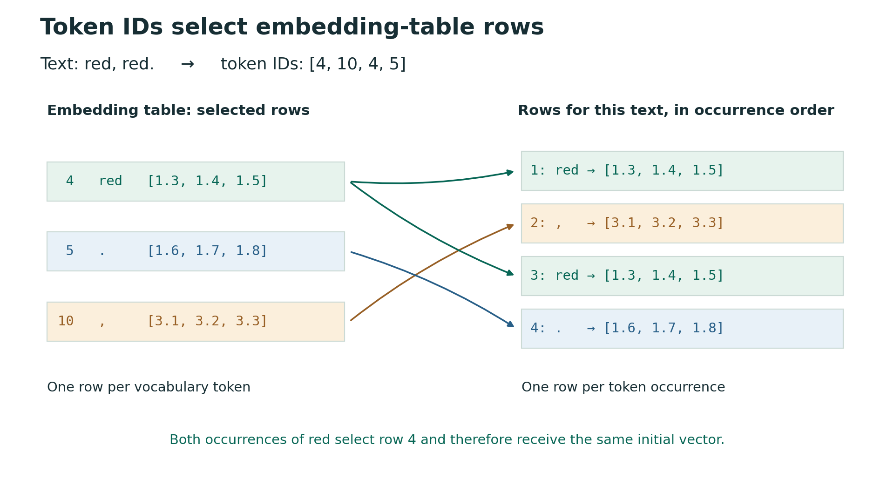

14 Tokens and embeddings
14.1 From nearest neighbours to attention
In the first few lectures of ENGSCI 205, we introduced nearest neighbours as a simple prediction method that doesn’t require an explicit model of the underlying physical process. Given input–output training pairs, to predict for a new input we find the training inputs closest to the new input and use the corresponding training outputs to predict the new output. We might just use the single closest training input and report its output. We could also take the two closest training inputs and average their outputs. More generally, we can form a weighted average, giving more weight to the outputs whose training inputs are closer, i.e. more similar, to the new one. One of the most important questions, though, is how to define and measure similarity.
As an arbitrary numerical example, suppose we have the following table of data:
| Input | Output |
|---|---|
| 1 | 2 |
| 3 | 8 |
| 6 | 10 |
For a new input of 4, the closest input in the table, using standard Euclidean distance, is 3, with corresponding output 8. If we use the two closest inputs, 3 and 6, the average of their outputs is \((8+10)/2=9\).
To carry out this prediction algorithm, we don’t need to know much about the underlying generating process: we find similar inputs and report a combination of the associated outputs. This contrasts with a common form of scientific and engineering prediction in which we come up with a mechanistic model for the process, fit its free parameters, then make predictions based on that model. The direct approach above is a form of similarity-based lookup.
The attention mechanism used in modern large language models is based on a similar lookup calculation. Here, “mechanism” just refers to the way of carrying out the lookup-style computation, not a “mechanistic model” in the traditional scientific sense. Attention uses three components: queries, keys and values. In our numerical example, the new input corresponds to the query, the training inputs in the table to the keys, and their corresponding outputs to the values. We compare the query with the keys and use the results of those comparisons to form a weighted average of the values. To see how we use this idea for language, we first need to specify the inputs and outputs of the prediction task.
14.2 Predicting the next item in a sequence
As we saw with time-dependent prediction in 205, we can structure the training observations in different ways to make different sorts of predictions. Suppose we have observed a sequence of six values, \((y_1,y_2,y_3,y_4,y_5,y_6)\), and wish to predict \(y_7\). We could try to predict based on the ‘time’ index (\(1,2,\dots\)), for example taking the closest index to our target (here 6 as closest to 7), but we soon run into the problem of, naively, not having seen ‘similar’ times before the further into the future we wish to predict. For example, to predict at index 70 we could take index 6, but these indices seem quite far away from each other.
As a natural first step towards predicting values much further in the future, we can construct an iterative/recursive procedure, first predicting \(y_7\), then \(y_8\), etc., all the way up to our future target. This is now a (very simple!) generative model, as it can be used to generate a continuation of the sequence.
However, with a naive ‘closest time’ nearest neighbour approach, this would just mean e.g. taking \(y_6\) for \(y_7\), then \(y_7\) – which is now \(y_6\) – for \(y_8\), etc, leading to still simply propagating the most recent value, here \(y_6\), forward for all future predictions. We can extend this approach, however, by replacing the simple ‘use the last value at the previous time’ rule with a learned function of the last value (or values more generally) to propagate at each step. For example, exponential growth might predict \(y_7\) as \(ay_6\) for some growth factor \(a > 1\).
To understand how this works, consider using the current value to predict the next one that follows in the simple example above. We can arrange the observations into five training examples:
| Input: current value | Target: the next value |
|---|---|
| \(y_1\) | \(y_2\) |
| \(y_2\) | \(y_3\) |
| \(y_3\) | \(y_4\) |
| \(y_4\) | \(y_5\) |
| \(y_5\) | \(y_6\) |
Here the lagged (previous) values form the inputs/features we use to predict the next value. We can fit a relationship like \[ y_{i+1} = ay_{i} \] to these data using regression.
We can obviously extend this to using multiple past values to predict the next value. In the linear case this means the next value is predicted as a linear combination of the previous values. This approach is called an autoregressive algorithm: we use current/past values of a quantity to predict its next value. This is the standard approach in sequence prediction, whether stock markets or code completions, where we are using current/past values of the sequence to predict the next values in the sequence.
The same general setup applies to predicting the next piece of text. In next token prediction, we first divide text into tokens, such as words, parts of words and punctuation (we will discuss converting text to tokens, called tokenisation, in more detail soon). We will denote tokens like this. Then, given a sequence of tokens so far (e.g. a partial sentence), we ask what comes next. In the simple case above we use the most recent value, i.e. taking most recent value to mean most relevant value, to base prediction on, which makes intuitive sense. However, in writing the most relevant values might be at different points in the past. For example, ’Hat is the tenth word of this text. Hence, _’. Counting words rather than punctuation, the missing tenth word must be hat or Hat for the statement to be true: the most distant word in this case. A key goal for us is to better understand how modern Large Language Models (LLMs) handle this dependence on long-range (far in the past) structure of language.
As a working example, related to our previous module, suppose we take whole words and punctuation (full stops, commas etc.) as tokens for now, and suppose our recorded text is:
The team colour is red. So the players wear red.
For one training example, we supply all of the text up to and including wear as the input and use the following red as the ground-truth target. The starting part of the text up to our chosen stopping point is called a prefix. We can construct other examples by choosing other stopping points. For example, the text up to players has wear as its next-token target, and the text up to the final red has the full stop as its target. Importantly, here we are moving away from a fixed-size input and instead using all the text up to the stopping point, rather than a fixed number of past observations. We could, however, also restrict the input to a recent window.
Because in next token prediction, and sequence prediction more generally, the targets are other values in the given sequence, we can construct these examples without someone separately labelling the answers. This is sometimes called self-supervised learning. The basic structure is essentially the same ‘table of inputs and outputs’ as ‘supervised’ learning, but no labelling is required beyond data re-structuring, e.g. by constructing lagged inputs and outputs.
While next token prediction is by now probably the most famous language prediction task, there are other important ones. In translation, for example, we predict a whole sentence in one language from a whole sentence in another (sequence-to-sequence prediction). Here, however, we will focus on predicting the next token from the text supplied so far.
14.3 Using the history: recurrence and attention
Given our basic autoregressive setting and next token prediction task, the question is how we should use the history (text so far) to predict the next token. For example, should we use the full history so far, a moving fixed-size history, some other history ‘summary’, or? In 205, and in much scientific modelling, we represented the recent history as a fixed-size state vector, which we updated as new values became available. For example, in predicting the trajectory of a simple projectile governed by Newtonian mechanics we would usually use the position and momentum of the projectile as the state vector that is updated according to Newton’s second law written as a system of two first-order vector differential equations. Generally, the assumption that we don’t need to keep the full history of the process, but only a lower-dimensional state, is a type of Markovian assumption.
Recurrent neural networks were an early approach to sequence prediction with neural networks using this state-based description. These maintain a state that, rather than just the most recent values of the sequence, is a learned summary of the history so far in a fixed-size state vector, called its hidden state (hidden since it is not just the directly observed values). Each update uses the previous hidden state and the new input token:
Recurrent model: previous state + new token → updated state → next-token prediction.
In our colour example, the model processes The, then team, then colour, and so on, updating its state at each step. To predict red after wear, information about the earlier red must have been carried through the intervening state updates. One of the problems this approach can encounter is difficulty in preserving the sorts of long-range dependencies that arise in language, e.g. trouble making sure the hidden state preserves all the relevant information.
Attention-based models provide another way to address this long-range forgetfulness. In the attention approach, we retain a collection of vectors for the tokens in the available history, up to the model’s context limit. We also compute a hidden-state-like ‘summary’ vector as the basis for the current prediction. At each step, we can form this summary using the retained history. So
Attention-based model: available text so far → vector for this prediction → next-token prediction.
Comparing both RNNs and attention methods, we see they both produce a vector from which we predict the next token. The difference is what we retain for the following prediction. In a standard RNN, the reduced hidden state is both what contains all the information from the past that we carry forward, and is the direct input for the prediction component. With attention, the retained text remains available at each step, while a summary is computed for the current prediction. This gives more flexibility: keeping only the final prediction vector at each stage would generally lose information needed to continue the attention-based model. We thus separate out the long-term memory/history and what is needed for the current prediction. The idea is that we can ‘restrict our attention’ to the most relevant parts for the current prediction, but still keep the available history around for later predictions. The way that attention ‘looks up’ the relevant information, in terms of queries, keys, and values, is discussed in following sections. (Note that there is also an approach called Long Short-Term Memory (LSTM) that is a type of RNN that tries to address the long-range forgetfulness problem, but we will not cover it here.)
Both RNNs and attention-based approaches can be used in the autoregressive setup described above: once we choose a next token, we include it in the history and predict again.
The Transformer architecture introduced by Vaswani et al. (2017), the foundation of GPT-style language models (GPT = Generative Pre-trained Transformer), uses attention in place of recurrent state updates within the model. It also includes additional components which we will return to after working through the basic attention calculation.
Before getting to attention, we consider the basics of converting the discrete symbols of language to numerical vectors we can process with neural networks.
14.4 Representing language numerically
Language uses discrete symbols, such as letters, words and so on, whereas typical neural network calculations above involve adding, scaling and multiplying vectors of numerical values. Can we take the sum of two words? The difference? Modern approaches to language modelling are built on the idea that we can convert words and other tokens to numerical representations, here vectors of real numbers, apply numerical operations, and get useful results. This mapping from tokens to vectors is called an embedding. These vectors are learned such that comparisons and combinations of them are useful for predicting or processing language.
An influential earlier example of the words-as-vectors approach is word2vec (Mikolov et al., 2013), which represents each word by a learned vector. In this approach, the components of the vector representations are learned by training a model to predict a word from nearby words, or nearby words from a given word. Words used in similar contexts can acquire similar vectors through this training. For example, as illustrated in Deep Learning with PyTorch, second edition, Chapter 4:
if we were to take the embedding vector for apple and begin to add and subtract the vectors for other words, we could begin to perform analogies like apple - red - sweet + yellow + sour and end up with a vector very similar to the one for lemon.
14.4.1 Tokens
As mentioned above, modern language models are based on first dividing text into tokens (e.g. words, subword components, punctuation, etc), and assigning each distinct token an integer ID. Note that at this point the numbers still have no real meaning, however, and adding or subtracting IDs doesn’t really make sense.
This first step is called the tokenisation step. For example, using a simple rule in which words and punctuation are separate tokens, we might encode a short piece of text as
Text: red, red.
Tokens: [`red`, `,`, `red`, `.`]
IDs: [ 4, 10, 4, 5]The IDs here are labels from an example vocabulary: red has ID 4, the comma has ID 10 and the full stop has ID 5. Importantly, both occurrences of red have the same ID. The size of an ID tells us nothing about the token’s meaning, so we will still need to convert these labels to vectors before using them in numerical operations or comparing similarities.
Here we consider a simple example of tokenisation, but in practice the tokenisation rules can be much more complex. Common approaches include Byte Pair Encoding (BPE) and WordPiece, which learn vocabularies of subword units from a text corpus using different construction rules. BPE builds larger pieces by repeatedly merging frequent adjacent pairs. These approaches let the model represent many rare or unseen words using pieces already in its vocabulary.
The choice of tokens determines what goes into the vocabulary. Using parts of words lets us represent unfamiliar words by combining pieces already in the vocabulary, rather than needing a separate entry for every word. For example, we could use the English alphabet as tokens and hence be able to construct each word as a sequence of tokens. However, we also want our tokens to be semantically meaningful, i.e. we want to be able to learn relationships between tokens. Relationships between words like cat and dog are more directly interpretable than relationships between individual letters like c and d. For simplicity, here we will mainly use words and punctuation, but this is a big topic.
14.4.2 The embedding table
To implement the mapping from tokens to vectors of real numbers, we construct an embedding table. In our case, the embedding table is a matrix where each row corresponds to a token ID and contains a vector of real numbers representing that token. The length of the vectors is a hyperparameter of the model, and tends to be larger for larger models. For example, the small GPT-2 model uses an embedding dimension of 768, while the 175-billion-parameter GPT-3 model uses 12,288. These model families also contain variants with other dimensions.
For this lookup example, we use the following arbitrary vectors. We keep capitalisation, so The and the are different tokens.
| ID | Token | Vector (d=3) |
|---|---|---|
| 0 | The |
[0.1, 0.2, 0.3] |
| 1 | team |
[0.4, 0.5, 0.6] |
| 2 | colour |
[0.7, 0.8, 0.9] |
| 3 | is |
[1.0, 1.1, 1.2] |
| 4 | red |
[1.3, 1.4, 1.5] |
| 5 | . |
[1.6, 1.7, 1.8] |
| 6 | So |
[1.9, 2.0, 2.1] |
| 7 | players |
[2.2, 2.3, 2.4] |
| 8 | wear |
[2.5, 2.6, 2.7] |
| 9 | the |
[2.8, 2.9, 3.0] |
| 10 | , |
[3.1, 3.2, 3.3] |
To represent a whole piece of text, we select an embedding vector for each token and arrange these vectors as the rows of a matrix \(X\). For red, red., the IDs are [4, 10, 4, 5], so we select those rows in that order. This gives the following matrix of token embeddings for our text:
\[ X=\begin{pmatrix} 1.3&1.4&1.5\\ 3.1&3.2&3.3\\ 1.3&1.4&1.5\\ 1.6&1.7&1.8 \end{pmatrix}. \]
Using PyTorch tensors, as in 205, we can construct the table and select the rows:
import torch
embedding_table = torch.tensor([
[0.1, 0.2, 0.3], # The
[0.4, 0.5, 0.6], # team
[0.7, 0.8, 0.9], # colour
[1.0, 1.1, 1.2], # is
[1.3, 1.4, 1.5], # red
[1.6, 1.7, 1.8], # .
[1.9, 2.0, 2.1], # So
[2.2, 2.3, 2.4], # players
[2.5, 2.6, 2.7], # wear
[2.8, 2.9, 3.0], # the
[3.1, 3.2, 3.3], # ,
])
token_ids = torch.tensor([4, 10, 4, 5])
X = embedding_table[token_ids]
red select the same row.The vectors are usually initialised randomly to start. However, the vectors representing each token are then updated during training (for whatever task we are training for). Conceptually, we could map each word or other token straight to its vector; IDs let us implement this as indexing into an array or lookup table. Thus these embedding tables are like trainable lookup tables storing numerical representations of our tokens.
14.4.3 Summary so far
So far, the conversion is therefore
Text → tokens → token IDs → vectors of real numbersWe can now use these vectors for similarity-based lookup.